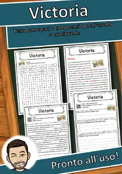
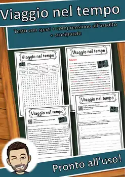
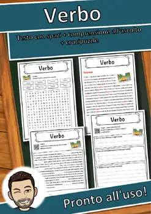
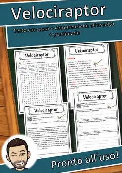
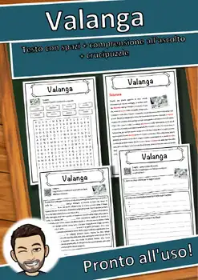
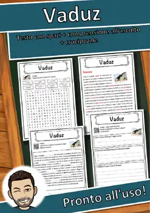
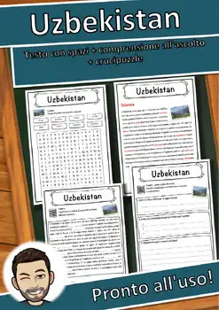
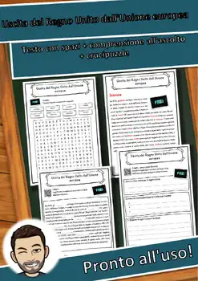

New resources
My newest resources appear here first. The list updates automatically.
48 resources

Video – Italian Reading Comprehension Worksheet (Scheda): Cloze & Listening
Vicugna pacos – Italian Reading Comprehension Worksheet (Scheda didattica)

Victoria – Italian Reading Comprehension Worksheet (Scheda): Cloze & Listening

Victor Hugo – Italian Reading Comprehension Worksheet (Scheda didattica)
Vicino Oriente – Italian Reading Comprehension Worksheet (Scheda didattica)

Vichinghi – Italian Reading Comprehension Worksheet (Scheda): Cloze & Listening

Viaggio nel tempo – Italian Reading Comprehension Worksheet (Scheda didattica)

Via Lattea – Italian Reading Comprehension Worksheet (Scheda): Cloze & Listening

Vetro – Italian Reading Comprehension Worksheet (Scheda): Cloze & Listening

Vespinae – Italian Reading Comprehension Worksheet (Scheda): Cloze & Listening
Vespa crabro – Italian Reading Comprehension Worksheet (Scheda didattica)

Vescovo – Italian Reading Comprehension Worksheet (Scheda): Cloze & Listening
Vertebrata – Italian Reading Comprehension Worksheet (Scheda): Cloze & Listening
Verkehr – Italian Reading Comprehension Worksheet (Scheda): Cloze & Listening

Verdura – Italian Reading Comprehension Worksheet (Scheda): Cloze & Listening
Verdi Svizzeri – Italian Reading Comprehension Worksheet (Scheda didattica)
Verbrechen – Italian Reading Comprehension Worksheet (Scheda): Cloze & Listening

Verbo – Italian Reading Comprehension Worksheet (Scheda): Cloze & Listening

Venus – Italian Reading Comprehension Worksheet (Scheda): Cloze & Listening
Ventriloquo – Italian Reading Comprehension Worksheet (Scheda didattica)

Vento – Italian Reading Comprehension Worksheet (Scheda): Cloze & Listening
Venezuela – Italian Reading Comprehension Worksheet (Scheda): Cloze & Listening
Venezia – Italian Reading Comprehension Worksheet (Scheda): Cloze & Listening

Vendetta – Italian Reading Comprehension Worksheet (Scheda): Cloze & Listening

Velociraptor – Italian Reading Comprehension Worksheet (Scheda didattica)
Velo – Italian Reading Comprehension Worksheet (Scheda): Cloze & Listening

Veleno – Italian Reading Comprehension Worksheet (Scheda): Cloze & Listening
Veicolo spaziale – Italian Reading Comprehension Worksheet (Scheda didattica)
Vegetarianismo – Italian Reading Comprehension Worksheet (Scheda didattica)
Veganismo – Italian Reading Comprehension Worksheet (Scheda): Cloze & Listening
Vaticano – Italian Reading Comprehension Worksheet (Scheda): Cloze & Listening
Vasilij Vasil'evič Kandinskij – Italian Reading Comprehension Worksheet
Vanuatu – Italian Reading Comprehension Worksheet (Scheda): Cloze & Listening

Vanadio – Italian Reading Comprehension Worksheet (Scheda): Cloze & Listening
Vampiro – Italian Reading Comprehension Worksheet (Scheda): Cloze & Listening
Valle – Italian Reading Comprehension Worksheet (Scheda): Cloze & Listening
Valencia – Italian Reading Comprehension Worksheet (Scheda): Cloze & Listening

Valanga – Italian Reading Comprehension Worksheet (Scheda): Cloze & Listening

Vaduz – Italian Reading Comprehension Worksheet (Scheda): Cloze & Listening
Vaccinium myrtillus – Italian Reading Comprehension Worksheet (Scheda didattica)
Vaccinazione – Italian Reading Comprehension Worksheet (Scheda didattica)

Uzbekistan – Italian Reading Comprehension Worksheet (Scheda): Cloze & Listening
Uva – Italian Reading Comprehension Worksheet (Scheda): Cloze & Listening

Utopia – Italian Reading Comprehension Worksheet (Scheda): Cloze & Listening

Uscita del Regno Unito dall'Unione europea – Italian Reading Worksheet
Uruguay – Italian Reading Comprehension Worksheet (Scheda): Cloze & Listening
Urtica – Italian Reading Comprehension Worksheet (Scheda): Cloze & Listening
Ursus maritimus – Italian Reading Comprehension Worksheet (Scheda didattica)
No resources found – try a different search term or filter.